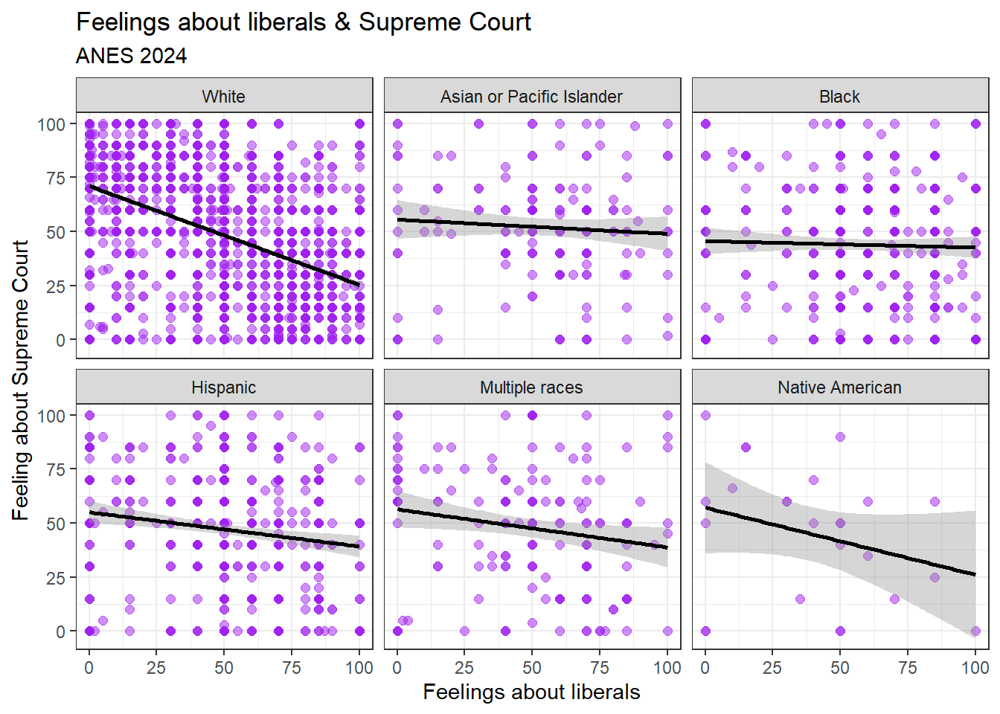

Chapter 9 Multiple regression
9.1 Getting started with this chapter
To get started in today’s chapter, open the project that you made in lab 1. If you forgot how to do this, see the instructions in section 2.2.
Now type install.packages("stargazer") into the Console.8 This new package will help us label our graphs in a way that is easier to read.
Next, open a new script file and save it in your scripts folder as “chapter 9 practice.” Write this on the page:
####################################
# Your name
# 20093 Chapter 9, Practice exercises
# Date started : Date last modified
####################################
#libraries------------------------------------------
library(tidyverse)
library(ggrepel)
library(modelr)
library(stargazer)Now select all the text on this page, run it, and then save it.
9.2 Multiple regression
In the last chapter, we learned how to do bivariate ordinary least squared (OLS) regression. This is an extremely powerful tool for statistical inference because it both provides a proportional reduction in error estimate (\(R^2\)), which tells us exactly how much of the variation in our dependent variable is explained by variation in our independent variable, and it provides us with a coefficient estimate, which tells us exactly what we expect to happen to our dependent variable with every one unit increase in our independent variable.
But there is one more reason that regression is a tool beloved by scientists. It provides an easy way to control for many different independent variables at the same time. Recall that in Chapter 8 we discussed how when R is running a regression it is estimating the values of M and B in the formula Y=MX+B. Another way that we can write that same formula is like this: \[Y=β_0+ β_1X_1\] In this version of the formula, we call the intercept \(β_0\) (β is the Greek letter Beta) instead of B, and we call the slope \(β_1\) instead of M. When conducting bivariate regression, we are asking R to give us the values of \(β_0\) (the intercept, or B) and \(β_1\) (the slope, or M) that best fits our data. When we want to conduct multiple regression, we can use the same principle, but we just have to add more independent variables and βs, like this: \[Y=β_0+ β_1X_1 + β_2X_2 + β_3X_3+…+ β_nX_n\] Multiple regression results include an estimate for all of those βs. The estimates are called “partial regression coefficients,” which is generally shortened to “coefficients.” And they are very powerful! In the above equation, R’s estimated value for \(β_1\) tells us what we expect to happen to our dependent variable, Y, when we increase \(X_1\) by one unit, and when we hold \(X_2\), \(X_3\), and all other independent variables in our equation constant. Thus, if someone were to say “Hey, I think that the relationship that you observe between \(X_1\) and Y is spurious; variation in \(X_2\), which happens to be correlated with \(X_1\), is the actual cause of variation in Y!” You can reply, “in this multiple regression, I controlled for \(X_2\) (in other words, I looked at the relationship between \(X_1\) and Y at similar values of \(X_2\)) and I still found a meaningful relationship between \(X_1\) and Y. Thus, I can rule out spuriousness!”
Let’s try an example, returning to our regression analysis from Chapter 8, where we looked at reaganMargin1980 as our dependent variable trumpMargin2024 as our dependent variable. To test this analysis, we ran the following regression:
model1<-lm(formula = trumpMargin2024 ~ reaganMargin1980, data = states2025)
#now we ask R to display the results of that analysis
model1##
## Call:
## lm(formula = trumpMargin2024 ~ reaganMargin1980, data = states2025)
##
## Coefficients:
## (Intercept) reaganMargin1980
## -0.03344 0.72737This output helped us write the equation for the relationship between reaganMargin1980 and trumpMargin2024:
trumpMargin2024 = -.03344 + -0.72737 (reaganMargin1980)
So in other words, R is estimating that a in state where Reagan and Carter in tied in 1980 (and thus Reagan’s margin was 0), Trump would lose by a proportion of .03344 (or about 3.3%), and that, if a state’s reaganMargin increased by 1 (moving from a score of 0, where Reagan and Carter tied, to a 1, which means that Reagan won 100% of the vote), Trump’s margin of victory would increase by .72737, or about 72.7%.
To determine whether these estimates are statistically significant, we summarized our regression model, like this:
##
## Call:
## lm(formula = trumpMargin2024 ~ reaganMargin1980, data = states2025)
##
## Residuals:
## Min 1Q Median 3Q Max
## -0.35722 -0.15308 0.00016 0.11850 0.48517
##
## Coefficients:
## Estimate Std. Error t value Pr(>|t|)
## (Intercept) -0.03344 0.03276 -1.021 0.312
## reaganMargin1980 0.72737 0.15504 4.692 2.21e-05 ***
## ---
## Signif. codes: 0 '***' 0.001 '**' 0.01 '*' 0.05 '.' 0.1 ' ' 1
##
## Residual standard error: 0.197 on 49 degrees of freedom
## Multiple R-squared: 0.31, Adjusted R-squared: 0.2959
## F-statistic: 22.01 on 1 and 49 DF, p-value: 2.208e-05This output shows us that the estimates of the slope and intercept are both statistically significant, and that the adjusted \(R_2\) is .2959, which means that variation Reagan’s margin in 1980 explain about 29.59% of variation in Trump’s margin in 2024.
That is pretty good! We can learn a lot about how states voted in 2024 by observing how they voted in 1980. However, we also know that there is still a lot of variation that is unexplained. Thinking back to our analysis of residuals in section 8.5, we know that, while our regression analysis does a pretty good job of explaining Michigan, it does a much less good job of explaining West Virginia.
Moreover, what if there is a variable that is correlated with reaganMargin1980 but which is the true cause of trumpMargin2024? If that were the case, and if we add that new independent variable to our regression analysis, then the relationship between reaganMargin1980 and trumpMargin2024 would no longer be statistically significant, and we would say that the relationship between reaganMargin and trumpMargin that we had observed is spurious.
One additional variable which might help explain Trump’s margin of victory in 2024 is the percentage of a state’s population that is evangelical, since evangelical Christians are an increasingly important constituency of the Republican party. When we control for percent evangelical, does reaganMargin1980 still help explain trumpMargin2024? To help us answer this question, we need to have R estimate \(β_1\) and \(β_2\) in this formula:
trumpMargin2024=\(β_0\) + \(β_1\)reaganMargin1980 + \(β_2\)evanPerc2020
We can do that with this command:
model2<-lm(formula = trumpMargin2024 ~ reaganMargin1980+evanPerc2020, data = states2025)
summary(model2)##
## Call:
## lm(formula = trumpMargin2024 ~ reaganMargin1980 + evanPerc2020,
## data = states2025)
##
## Residuals:
## Min 1Q Median 3Q Max
## -0.29391 -0.07966 0.00576 0.07360 0.50405
##
## Coefficients:
## Estimate Std. Error t value Pr(>|t|)
## (Intercept) -0.274902 0.041992 -6.546 3.65e-08 ***
## reaganMargin1980 0.876417 0.112853 7.766 4.98e-10 ***
## evanPerc2020 0.013624 0.001967 6.926 9.55e-09 ***
## ---
## Signif. codes: 0 '***' 0.001 '**' 0.01 '*' 0.05 '.' 0.1 ' ' 1
##
## Residual standard error: 0.1408 on 48 degrees of freedom
## Multiple R-squared: 0.6549, Adjusted R-squared: 0.6405
## F-statistic: 45.54 on 2 and 48 DF, p-value: 8.155e-12Looking at the Pr(>|t|) column in this output, we can see that the intercept and both coefficient estimates are statistically significant, because the numbers are much, much lower than .05. The value of adjusted \(R_2\) is .6405, which means that variation in reaganMargin and percent evangelical explains about 64% of variation in trumpMargin2024.
trumpMargin2024 = -.2749 + .8764reaganMargin1980 + .0136evanPerc2020
This equation is telling us that, based on our data, R predicts that in a state where Reagan and Carter tied in 1980 (creating a reaganMargin1980 of 0),with 0 evangelical Christians, Trump would have lost to Harris by .2749, or 27.49%. However, holding the percent of evangelicals in that state constant, if we increase Reagan’s margin of victory in 1980 from 0 to 1 (or from 0% to 100%), then we expect Trump’s margin of victory in 2024 to increase by .8764, or 87.64%. Moreover, holding Reagan’s margin in 1980 constant, an 1% increase of the percentage of evangelical Christians in a state is associated with a .0136 increase in trumpMargin2024 (or a 1.36% increase in Trump’s margin of victory). In other words we know that the partial relationship between Reagan margin and Trump margin, controlling for evangelical population, is not spurious.
9.3 Residuals in multiple regression
We can also apply the same principles that we used in section 8.5 to see which of our cases are really well explained by our model (with residuals that are close to 0) and which are less well explained by our model:
model2.data<-states2025 %>%
add_predictions(model2) %>%
add_residuals(model2)
model2.data$abs.resid<-abs(model2.data$resid)Now let’s look at the states with the residuals that are the farthest from zero:
## # A tibble: 6 × 2
## state abs.resid
## <chr> <dbl>
## 1 West Virginia 0.504
## 2 Washington 0.294
## 3 Wyoming 0.276
## 4 District of Columbia 0.232
## 5 Colorado 0.205
## 6 California 0.196Just like the bivariate regression, West Virginia remains the state with the residual that is the farthest from 0 (the state that our regression has the most trouble explaining). DC also remains in our top six, but other than those two, we can see that, with our multiple regression the other four states with the residuals farthest from zero are not in the South (Washington, Wyoming, Colorado, and California). This might suggest that the percent evangelical was important driver of Trump’s margin of victory in the South in 2024, and that was not captured by our first regression. If you run the same command in without desc(), you will see that Michigan, which was the case that our bivariate regression explained the best, is no longer in the top six best explained cases of our multivariate regression.9
9.4 Stargazer output
The output that we generated in the last section is pretty difficult to read, and would not look good in a paper. But, we have a nice solution – the stargazer package that we installed above! Once we have installed and loaded that package, we can invoke it like this:
stargazer(model1, model2, type="html", out="lab9regressions.html",
column.labels = c("Model 1", "Model 2"),
single.row=FALSE,
notes.append = FALSE,
header=FALSE)This is telling R to make a table with regression results from both of our regressions and to save it as a file called lab9regressions.html. If you want to change the name, you can just change what you write in the quotes after “out=”. Just don’t type any periods before .html, and keep the .html at the end. If you have more than two models that you want to run, you can just add them, but you have to add as many labels as you have models after column.labels.
When you run this command, a bunch of gibberish will pop up in your consol. Don’t worry about that. Just look in the main folder where you have your Scope and Methods labs project stored. There, you should see an html file called “lab9regressions.html” (unless you changed the name to something else). Open that file – it should open in your web browser. Highlight all of the text, copy it (using Ctrl-C on a Windows machine or Command-C on a Mac), and paste it into a word processor document. You should see something like this:
| Dependent variable: | ||
| trumpMargin2024 | ||
| Model 1 | Model 2 | |
| (1) | (2) | |
| reaganMargin1980 | 0.727*** | 0.876*** |
| (0.155) | (0.113) | |
| evanPerc2020 | 0.014*** | |
| (0.002) | ||
| Constant | -0.033 | -0.275*** |
| (0.033) | (0.042) | |
| Observations | 51 | 51 |
| R2 | 0.310 | 0.655 |
| Adjusted R2 | 0.296 | 0.640 |
| Residual Std. Error | 0.197 (df = 49) | 0.141 (df = 48) |
| F Statistic | 22.011*** (df = 1; 49) | 45.540*** (df = 2; 48) |
| Note: | p<0.1; p<0.05; p<0.01 | |
This is an extremely useful table, very much like what you see when you read many academic journal articles that use regression analysis. At the top, you see a title that identifies the dependent variable for all regressions in the table – trumpMargin2024. The column on the left provides the variable names.
Once you have pasted that text into your word processor, You should go in and change variable names and the title to something that will be easy for your readers to understand. So, for example, instead of evanPerc2020, you might write “Percent evangelical, 2020” and instead of reaganMargin1980, you might write “Reagan margin, 1980”. The second column is the results of the first regression that we ran, with only reaganMargin1980 as the independent variable (you can tell that the regression did not include the age variable because the spot where the estimated coefficient for evanPerc2020 would go is blank). The “constant” is the intercept (they are the same thing). The third column is the results of the second regression analysis. If you look at the Adjusted \(R^2\) row, you can see how the Adjusted \(R^2\) changes as you add and subtract variables to the regression equation. When Adjusted \(R^2\) decreases as you add more independent variables, that means that whatever increase in explanatory power that you get from the new variables is more than offset by the loss in degrees of freedom that you take by adding more variables.
9.5 Dummy variables in multiple regression
For the next set of examples, we are going to use the variable ft_sccs in ANES as our dependent variable. This variable is a feeling thermometer on the the US Supreme Court, which ranges from 0 (most negative feelings) and 100 (most positive feelings).
We often want to include nominal variables in regression analysis. For example, we want to know whether things like gender, religion, and race might cause variation in our dependent variable. However, since the values in a nominal variable can be listed in any order, it does not make sense to talk about “increasing” the value of a nominal independent variable. We get around this by converting a nominal independent variable into a series of dummy variables (variables coded 0, for when an attribute is absent, and 1, for when it is present).
So, for example, the houseKnowledge variable in anes2024 is coded so that respondents that correctly identified the Republicans as the party that controlled the House of Representatives got a 1, and respondents that gave an incorrect answer got a 0. If we want to use that as an independent variable for regression analysis, we are asking R to estimate \(β_0\) and \(β_1\) in this equation:
ft_ussc=\(β_0\)+ \(β_1\)houseKnowledge
How would we interpret the results of this regression? For people wrong about the party that controls the House, the predicted value of ft_ussc would be \(β_0\) (because \(β_1\) multiplied by 0 equals 0). For people who know which party controls the House, the estimated value of ft_ussc would be \(β_0\) + \(β_1\) (because \(β_1\) multiplied by 1 equals \(β_1\)).
Let’s run this regression using this command:
##
## Call:
## lm(formula = ft_ussc ~ houseKnowledge, data = anes2024)
##
## Residuals:
## Min 1Q Median 3Q Max
## -50.240 -17.953 2.047 19.760 52.047
##
## Coefficients:
## Estimate Std. Error t value Pr(>|t|)
## (Intercept) 50.2400 0.6675 75.265 < 2e-16 ***
## houseKnowledge -2.2873 0.8244 -2.774 0.00555 **
## ---
## Signif. codes: 0 '***' 0.001 '**' 0.01 '*' 0.05 '.' 0.1 ' ' 1
##
## Residual standard error: 26.52 on 4582 degrees of freedom
## (937 observations deleted due to missingness)
## Multiple R-squared: 0.001677, Adjusted R-squared: 0.001459
## F-statistic: 7.697 on 1 and 4582 DF, p-value: 0.005553This output tells us a few important things. First, it helps us fill out the equation from above, like this:
ft_ussc=50.24 + -2.29houseKnowledge
In other words, R is estimating that the average person who does not know which party controls the House gives the Supreme Court a 50.24, and that the average person who does know which party controls the House gives the Supreme court a 50.24-2.29, which is 47.95. And these estimates are both statistically significant.
Second, the adjusted \(R^2\) value of this equation tells us that variation in House knowledge alone only explains about 0.146% of variation in feelings on the Supreme Court. Thus, there are likely a lot of major causes that are missing from this model.
An important note: Let’s take a minute to generate a dummy variable for those who gave the wrong answer to House question,like this:
This variable is the inverse of our houseKnowledge variable. While the houseKnowledge variable is coded 1 for those who gave the correct answer to the question which party controls the House, the nonKnowledgeable variable is coded 1 for respondents that gave the incorrect answer. If we include that variable in the regression model above, to estimate this equation:
ft_ussc=\(β_0\)+ \(β_1\)houseKnowledge+\(β_2\)nonKnowledgeable
we are giving R an impossible task. That it because no case will have a value of 0 for both our houseKnowledge and nonKnowledgable variables. If we ignore this impossibility, and force R to do it anyway, R does this:
##
## Call:
## lm(formula = ft_ussc ~ houseKnowledge + nonKnowledgeable, data = anes2024)
##
## Coefficients:
## (Intercept) houseKnowledge nonKnowledgeable
## 50.240 -2.287 NAR essentially says “no thank you.” You will see that the coefficient for nonKnowledgeable is NA. That is because R noticed that the houseKnowledge and nonKnowledgeable variables are redundant with one another and left the nonKnowledgeable variable out. Aside from that coefficient, the rest of the output is the same as when we ran the regression with only the houseKnowledge variable.
The houseKnowledge variable is a nominal variable with only two values: either each respondent either answered correctly or didn’t. But it is still important to avoid including redundant variables in regression even when we are dealing with nominal independent variables with more than two values, such as race. If we enter table(anes2024$race), we can see that the race variable in ANES has six values: Asian or Pacific Islander, Black, Hispanic, Multiple races, Native American, and White. Let’s see what happens when we include that variable in a regression analysis with ft_ussc as our dependent variable, like this:
##
## Call:
## lm(formula = ft_ussc ~ race, data = anes2024)
##
## Residuals:
## Min 1Q Median 3Q Max
## -52.125 -19.639 0.361 20.361 56.217
##
## Coefficients:
## Estimate Std. Error t value Pr(>|t|)
## (Intercept) 52.125 2.043 25.512 < 2e-16 ***
## raceBlack -8.342 2.411 -3.460 0.000545 ***
## raceHispanic -4.833 2.364 -2.044 0.040980 *
## raceMultiple races -4.096 2.873 -1.426 0.153976
## raceNative American -7.085 5.677 -1.248 0.212077
## raceWhite -2.486 2.091 -1.189 0.234511
## ---
## Signif. codes: 0 '***' 0.001 '**' 0.01 '*' 0.05 '.' 0.1 ' ' 1
##
## Residual standard error: 26.48 on 4814 degrees of freedom
## (701 observations deleted due to missingness)
## Multiple R-squared: 0.004912, Adjusted R-squared: 0.003878
## F-statistic: 4.752 on 5 and 4814 DF, p-value: 0.0002467What R has done here is converted our race variable into six dummy variables: one for each value in the original race variable, and estimated the intercept and coefficient for this equation:
ft_ussc = \(β_0\) + \(β_1\)Black + \(β_2\)Hispanic + \(β_3\)MultipleRaces + \(β_4\)NativeAmerican + \(β_5\)White
Notice that our original race variable had six categories, but there are only five dummy variables in the model. That is because if R included the sixth value—Asian or Pacific Islander—then R would have put itself in a position where it was trying to estimate ft_ussc for a person would cannot exist in our data – someone with 0s on all 0 possible values for race. Thus, R chooses one category to be the “reference category,” and leaves that one out.
In the case of the race variable in ANES, R chose to leave out the first category in alphabetical order, which is “Asian or Pacific Islander.” Thus, the intercept that R estimated in the above regression (52.13) is the predicted value of feelings about the Supreme Court for someone who identified themselves as Asian or Pacific Islander (because their values on all of the other possible race dummy variables are 0).
-8.342 is the expected differences between someone who is an Asian or Pacific Islander and someone who is Black; in other words, Blacks seem to have a lower estimation of the Supreme Court, on average, than Asians or Pacific Islanders. And the rest of the coefficients estimate the differences between the groups that they identify and Asian Pacific Islanders.
R chose “Asian or Pacific Islander” as the reference category because it comes first in alphabetical order when looking at the values for the race variable. This would be useful analysis if we were writing a paper about the public opinion of Asians and Pacific Islanders. However, given that whites are the majority in our sample, we might want to compare the various ethnic minority groups in this sample with whites. To do that, we would have to first make the race variable into a factor,10 like this:
Next, we have to relevel the variable, telling R what we want the reference category to be, like this:
This will compare all the racial groups in this variable to whites. So, now, let’s run a regression with ft_ussc as our dependent variable and race.factor as our independent variable, like this:
##
## Call:
## lm(formula = ft_ussc ~ race.factor, data = anes2024)
##
## Residuals:
## Min 1Q Median 3Q Max
## -52.125 -19.639 0.361 20.361 56.217
##
## Coefficients:
## Estimate Std. Error t value Pr(>|t|)
## (Intercept) 49.6386 0.4457 111.381 < 2e-16 ***
## race.factorAsian or Pacific Islander 2.4864 2.0912 1.189 0.2345
## race.factorBlack -5.8559 1.3554 -4.320 1.59e-05 ***
## race.factorHispanic -2.3463 1.2699 -1.848 0.0647 .
## race.factorMultiple races -1.6096 2.0679 -0.778 0.4364
## race.factorNative American -4.5986 5.3152 -0.865 0.3870
## ---
## Signif. codes: 0 '***' 0.001 '**' 0.01 '*' 0.05 '.' 0.1 ' ' 1
##
## Residual standard error: 26.48 on 4814 degrees of freedom
## (701 observations deleted due to missingness)
## Multiple R-squared: 0.004912, Adjusted R-squared: 0.003878
## F-statistic: 4.752 on 5 and 4814 DF, p-value: 0.0002467Now R is using the dummy variable for “white” as our reference category. So, interpreting this, we can see that R predicts that the average white person will give the Supreme Court a 49.64, the average Black person’s score will be 5.86 points lower than that, the average Hispanic person’s score will be 2.35 points lower than the average white person, etc. Interestingly, we can also see that Blacks are the only racial group that differs from Whites in their assessment of the Supreme Court in a statistically significant way.
9.6 Ordinal variables in regression analysis
If we put an ordinal variable into our regression analysis as an ordered factor (the way that R likes to treat ordinal variables), R will treat the possible values as a series of dummy variables, leave one out, and produce in the output in a way that is pretty confusing.11 One way around this is to convert an ordinal variable into a numeric variable, like we did in section 4.4. Let’s try this with the outrage variable, testing the hypothesis that people that are more prone to outrage are also more likely to be outraged about the US Supreme Court, and thus produce a lower ft_ussc.
First, we have to check the way that the values are ordered, using this command: levels(anes2024$outrage). If you enter that into your console, you will see that the variable is coded so that the lowest value is “not at all” outraged, and the highest value is “extremely” outraged. So when we convert this to numeric, it will still make sense to keep the values in this order. Now let’s convert the variable to numeric and rename it:
Now, if you run table(anes2024$outrage2), you will see that our new variable is scaled from 1 to 5. However, it will be a little easier for us if we scale this variable from 0 to 4. We can accomplish that with this command:
Now let’s try our regression analysis with our new variable:
##
## Call:
## lm(formula = ft_ussc ~ outrage2, data = anes2024)
##
## Residuals:
## Min 1Q Median 3Q Max
## -53.17 -18.36 1.64 19.24 56.45
##
## Coefficients:
## Estimate Std. Error t value Pr(>|t|)
## (Intercept) 43.5532 0.7590 57.385 < 2e-16 ***
## outrage2 2.4032 0.2953 8.137 5.14e-16 ***
## ---
## Signif. codes: 0 '***' 0.001 '**' 0.01 '*' 0.05 '.' 0.1 ' ' 1
##
## Residual standard error: 26.32 on 4658 degrees of freedom
## (861 observations deleted due to missingness)
## Multiple R-squared: 0.01402, Adjusted R-squared: 0.0138
## F-statistic: 66.21 on 1 and 4658 DF, p-value: 5.142e-16Interestingly, these results show that, on average, someone with an outrage score of 0 (meaning they were not at all outraged) gave the Supreme Court a 43.55, but a one point increase in the outrage scale is associated with a 2.4 point increase in positive feelings toward the Supreme Court. Perhaps outraged people trust the Supreme Court to address their sources of outrage?
9.7 Graphing multiple regression
When you ask R to calculate a bivariate OLS regression, you are actually asking R to estimate the formula for a line. This is relatively easy to represent on a two-dimensional scatterplot. You can have R plot all of the points that it is using to estimate the line, as well as the line itself (like we did in Chapter 8). When you add a second independent variable, you are asking R to estimate the formula for a plane, which becomes harder to graph, and when you add a third, you are asking R to estimate the formula for a three-dimensional object, which is even harder to graph. Adding four or more independent variable makes it impossible to graph the whole relationship about which you are asking R to theorize. However, there are still ways to represent part of the relationship. For example, let’s say that we have asked R to run this regression:
summary(lm(ft_ussc~ft_liberals+race.factor, data=anes2024))When we do this, we are asking R to estimate the intercept and coefficients in this equation:
ft_ussc=\(β_0\)+ \(β_1\)ft_liberals + \(β_2\)AsianPacificIslander + \(β_3\)Black + \(β_4\)Hispanic + \(β_5\)MultipleRaces + \(β_6\)NativeAmerican
with “White” as the reference category for race. One way that we can graphically represent this relationship is by using facets. In other words, we can ask R to make a different scatterplot for every value of our nominal race variable, using the following code.
ggplot(data=anes2024 %>% filter(!is.na(race.factor)), aes(x=ft_liberals, y=ft_ussc)) +
geom_point(size=2, alpha=.5, color="purple") +
theme_bw()+
#add axis labels
labs(title = "Feelings about liberals & Supreme Court",
subtitle="ANES 2024",
x="Feelings about liberals",
y="Feeling about Supreme Court", color=NULL)+
#add regression line
geom_smooth(method='lm', color="BLACK")+
#make different graphs for every value of a nominal or ordinal variable
facet_wrap(~race.factor)
This graph shows us the relationship between feelings about liberals and feelings about the US Supreme court at all values of our race variable. Notice how much more substantially negative the relationship is among whites than it is among other racial groups.
9.8 Review of this chapter’s commands
| Command | Purpose | Library |
|---|---|---|
| stargazer() | Use this code to generate a beautiful table displaying the results of one or more regressions. | stargazer |
| as.factor() | Changes a character variable to a factor. Necessary when you want to set a different reference category when including a nominal variable in regression analysis. | Base R |
| relevel(, ref=““) | Changes the reference category of a factor. Necessary when you want to set a different reference category when including a nominal variable in regression analysis. | Base R |
References
To test this, you can use this command:
model2.data %>% dplyr::select(state,abs.resid) %>% arrange(abs.resid) %>% head()↩︎Because race is a nominal variable, we are making it into a non-ordered factor. If it were an ordinal variable, we would want to make it an ordered factor.↩︎
if you don’t believe me, enter
lm(ft_ussc~outrage,data=anes2024)into the Console.↩︎